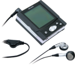

JBMGen
JBMGen is a project to support the ARCLibrary functionality
on the Archos GMini 120
and the Archos GMini 220.
Currently these require the proprietary MusicMatch software to generate
the database file needed by the ARCLibrary system. This project aims
to create a Free Software
alternative so that these MP3 players can be used on Free Operating Systems
(such as GNU/Linux) without the need for proprietary software.
jbmgen 1.1.0 has been released. This
supports all of the basic ARCLibrary functionality.
Jbmgen is not associated with ARCHOS and it is not endorsed by them. Use of
this is at your own risk.
Simon Howard